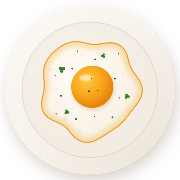

What Piring does
Piring is a cooking app for a family's own recipes, made for Android tablets, phones and Google TV.
- Find recipes by name on Indonesian recipe sites (Cookpad Indonesia, Resep Koki) and save them with the author and source link.
- Write your own recipes, mark favorites and archive the ones you rarely cook.
- Prepare and cook step by step: scale portions, tick off ingredients, run timers, and have steps read aloud.
- Shopping list built from the ingredients you still need.
- Optional Google sign-in to keep your recipes and shopping list in your own Google Drive and open them on your other devices.
Your data
Piring has no account system and no server of its own. Recipes are stored on your device. If you sign in with Google, a copy is kept in a “Piring” folder in your own Google Drive. Piring can open only the files it created there. Details are in the privacy policy.
Tentang Piring
Piring adalah aplikasi masak untuk resep keluarga. Cari resep Indonesia cukup dengan nama masakannya, simpan ke Piringku, siapkan bahan, lalu masak langkah demi langkah di tablet, ponsel, atau TV. Masuk dengan Google bersifat pilihan dan hanya menyimpan salinan resep di Google Drive milikmu sendiri.